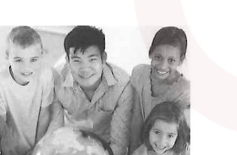
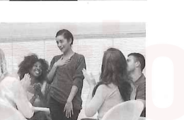

Tā de hànyǔ shuō de gēn zhōngguórén yíyàng hǎo. - Cô ấy nói tiếng Trung Quốc hay như người Trung Quốc vậy.
💡 Cách học: Rê chuột (hoặc chạm trên điện thoại) vào bất kỳ chữ Hán nào để tra Pinyin và nghĩa tiếng Việt; chữ có dấu chấm cam • là chữ đa âm tự (bấm/giữ để xem toàn bộ các âm khác); bấm "👁 Dịch cả câu" khi cần kiểm tra lại khả năng hiểu nghĩa của mình.
第一部分: 第 1 - 5 题
5 câu đối thoại & tranh minh họa
Yêu cầu: 听对话，选择与对话内容一致的图片 (Nghe đối thoại, chọn tranh tương ứng A - F):
Hình A: Cậu bé cầm cúp chiến thắng (比赛 / 拿了第一 / 参赛)
Hình B: Hai người đi leo núi (爬山 / 越爬越高 / 山路)

Hình C: Ảnh chụp tập thể lớp học (班的照片 / 周老师 / 山山)
Hình D (Ví dụ): Nhân viên nữ nghe điện thoại (打电话)
Hình E: Cô gái mệt mỏi với mắt thâm quầng (像大熊猫一样 / 没睡好)

Hình F: Nhóm bạn ngồi khen nhau nói tiếng Trung giỏi (跟中国人一样 / 哪里哪里)
Ví dụ
男:喂，请问张经理在吗？Wèi, qǐngwèn Zhāng jīnglǐ zài ma?Alo, xin hỏi giám đốc Trương có ở đó không?
女:他正在开会，您半个小时以后再打，好吗？Tā zhèngzài kāihuì, nín bàn ge xiǎoshí yǐhòu zài dǎ, hǎo ma?Ông ấy đang họp, khoảng nửa tiếng nữa bạn gọi lại được không?
D Hình D: Gọi điện thoại (打电话) √
Câu 1
女:大明，你看我的眼睛是不是跟熊猫一样了？Dàmíng, nǐ kàn wǒ de yǎnjing shì bu shì gēn xióngmāo yíyàng le?Đại Minh, anh xem mắt em có phải giống gấu trúc rồi không?
男:怎么昨天又没睡好？别总想工作的事，好好休息。Zěnme zuótiān yòu méi shuì hǎo? Bié zǒng xiǎng gōngzuò de shì, hǎohāo xiūxi.Sao thế, hôm qua lại không ngủ ngon à? Đừng luôn nghĩ tới công việc nữa, nghỉ ngơi cho tốt đi.
A Hình A
B Hình B
C Hình C
D Hình D
E Hình E
F Hình F
Dàmíng, nǐ kàn wǒ de yǎnjing shì bu shì gēn xióngmāo yíyàng le? Zěnme zuótiān yòu méi shuì hǎo? Bié zǒng xiǎng gōngzuò de shì, hǎohāo xiūxi.
Dịch nghĩa: 女: "Đại Minh, anh xem mắt em có phải giống gấu trúc rồi không?" | 男: "Sao thế, hôm qua lại không ngủ ngon à? Đừng luôn nghĩ tới công việc nữa, nghỉ ngơi cho tốt đi." Giải thích: Đáp án đúng là E: Mắt thâm quầng như gấu trúc vì mất ngủ ('眼睛跟熊猫一样', '昨天又没睡好'), phù hợp hình cô gái mệt mỏi cầm cốc nước.
Câu 2
男:方老师，这次中文比赛的第一是你们班的学生吗？Fāng lǎoshī, zhè cì zhōngwén bǐsài de dì-yī shì nǐmen bān de xuésheng ma?Thầy Phương, giải nhất cuộc thi tiếng Trung lần này là học sinh lớp thầy ạ?
女:是，这个小男孩叫天天，他第一次参赛就拿了第一。Shì, zhè ge xiǎo nánhái jiào Tiāntian, tā dì-yī cì cānsài jiù ná le dì-yī.Đúng thế, cậu bé này tên là Điềm Điềm, em ấy lần đầu dự thi đã giành giải nhất.
A Hình A
B Hình B
C Hình C
D Hình D
E Hình E
F Hình F
Fāng lǎoshī, zhè cì zhōngwén bǐsài de dì-yī shì nǐmen bān de xuésheng ma? Shì, zhè ge xiǎo nánhái jiào Tiāntian, tā dì-yī cì cānsài jiù ná le dì-yī.
Dịch nghĩa: 男: "Thầy Phương, giải nhất cuộc thi tiếng Trung lần này là học sinh lớp thầy ạ?" | 女: "Đúng thế, cậu bé này tên là Điềm Điềm, em ấy lần đầu dự thi đã giành giải nhất." Giải thích: Đáp án đúng là A: Cuộc thi tiếng Trung và cậu bé đoạt giải nhất ('中文比赛', '拿了第一'), tương ứng hình cậu bé cầm cúp thưởng.
Câu 3
女:这山怎么越爬越高啊，还有多远？Zhè shān zěnme yuè pá yuè gāo a, hái yǒu duō yuǎn?Núi này sao càng leo càng cao thế, còn bao xa nữa?
男:我对这儿比较了解，再爬一个小时就到了，先休息会儿吧。Wǒ duì zhèr bǐjiào liǎojiě, zài pá yí ge xiǎoshí jiù dào le, xiān xiūxi huìr ba.Tôi khá thông thuộc nơi này, leo thêm một tiếng nữa là tới thôi, nghỉ một lát trước đã.
A Hình A
B Hình B
C Hình C
D Hình D
E Hình E
F Hình F
Zhè shān zěnme yuè pá yuè gāo a, hái yǒu duō yuǎn? Wǒ duì zhèr bǐjiào liǎojiě, zài pá yí ge xiǎoshí jiù dào le, xiān xiūxi huìr ba.
Dịch nghĩa: 女: "Núi này sao càng leo càng cao thế, còn bao xa nữa?" | 男: "Tôi khá thông thuộc nơi này, leo thêm một tiếng nữa là tới thôi, nghỉ một lát trước đã." Giải thích: Đáp án đúng là B: Cảnh leo núi ('这山怎么越爬越高', '再爬一个小时'), tương ứng hình hai người leo núi.
Câu 4
男:你说得真好，几乎跟中国人一样。Nǐ shuō de zhēn hǎo, jīhū gēn zhōngguórén yíyàng.Bạn nói giỏi thật đấy, hầu như hay như người Trung Quốc vậy.
女:哪里哪里，大家说得都很好。Nǎlǐ nǎlǐ, dàjiā shuō de dōu hěn hǎo.Đâu có đâu có, mọi người ai nói cũng đều rất hay.
A Hình A
B Hình B
C Hình C
D Hình D
E Hình E
F Hình F
Nǐ shuō de zhēn hǎo, jīhū gēn zhōngguórén yíyàng. Nǎlǐ nǎlǐ, dàjiā shuō de dōu hěn hǎo.
Dịch nghĩa: 男: "Bạn nói giỏi thật đấy, hầu như hay như người Trung Quốc vậy." | 女: "Đâu có đâu có, mọi người ai nói cũng đều rất hay." Giải thích: Đáp án đúng là F: Khen ngợi khẩu ngữ tiếng Trung chuẩn như người bản xứ ('几乎跟中国人一样', '哪里哪里'), tương ứng hình nhóm bạn đang trò chuyện rôm rả.
Câu 5
男:这是你们班的照片吗？Zhè shì nǐmen bān de zhàopiàn ma?Đây là ảnh chụp của lớp các bạn à?
女:对，我来给你介绍一下，中间这个是我们班周老师，周老师旁边这个男孩叫山山，他上课总是迟到。Duì, wǒ lái gěi nǐ jièshào yíxià, zhōngjiān zhè ge shì wǒmen bān Zhōu lǎoshī, Zhōu lǎoshī pángbiān zhè ge nánhái jiào Shānshan, tā shàngkè zǒngshì chídào.Đúng rồi, để tôi giới thiệu cho bạn nhé, người ở giữa là cô Chu lớp tôi, cậu bé bên cạnh cô Chu tên là Sơn Sơn, cậu ấy lên lớp toàn đi muộn thôi.
A Hình A
B Hình B
C Hình C
D Hình D
E Hình E
F Hình F
Zhè shì nǐmen bān de zhàopiàn ma? Duì, wǒ lái gěi nǐ jièshào yíxià, zhōngjiān zhè ge shì wǒmen bān Zhōu lǎoshī, Zhōu lǎoshī pángbiān zhè ge nánhái jiào Shānshan, tā shàngkè zǒngshì chídào.
Dịch nghĩa: 男: "Đây là ảnh chụp của lớp các bạn à?" | 女: "Đúng rồi, để tôi giới thiệu cho bạn nhé, người ở giữa là cô Chu lớp tôi, cậu bé bên cạnh cô Chu tên là Sơn Sơn, cậu ấy lên lớp toàn đi muộn thôi." Giải thích: Đáp án đúng là C: Giới thiệu ảnh tập thể lớp học ('你们班的照片', '中间这个是我们班周老师'), tương ứng hình bức ảnh nhóm học sinh.
第二部分: 第 6 - 10 题
Phán đoán Đúng (√) hoặc Sai (×)
Yêu cầu: 听短文或对话，判断对错 (Nghe câu nói/đoạn văn, phán đoán câu nhận định ★ là Đúng [ √ ] hay Sai [ × ]):
Ví dụ
为了让自己更健康，他每天都花一个小时去锻炼身体。Wèile ràng zìjǐ gèng jiànkāng, tā měitiān dōu huā yí ge xiǎoshí qù duànliàn shēntǐ.Để bản thân khỏe mạnh hơn, mỗi ngày anh ấy đều dành ra một tiếng để rèn luyện thân thể.
• ★ 他希望自己很健康。Tā xīwàng zìjǐ hěn jiànkāng.Anh ấy hy vọng bản thân thật khỏe mạnh.
√ Đúng (√)
Câu 6
十二月的南方，房间里跟房间外一样冷，所以回家了大家也要穿很多衣服。Shí'èr yuè de nánfāng, fángjiān lǐ gēn fángjiān wài yíyàng lěng, suǒyǐ huí jiā le dàjiā yě yào chuān hěn duō yīfu.Tháng mười hai ở miền Nam, trong phòng cũng lạnh như ngoài phòng vậy, cho nên về nhà mọi người vẫn phải mặc rất nhiều quần áo.
• ★ 南方十二月的时候房间里不太冷。Nánfāng shí'èr yuè de shíhou fángjiān lǐ bú tài lěng.Tháng mười hai ở miền Nam trong phòng không lạnh lắm.
Dịch đối chiếu: Lời thoại: "Tháng mười hai ở miền Nam, trong phòng cũng lạnh như ngoài phòng vậy, cho nên về nhà mọi người vẫn phải mặc rất nhiều quần áo." vs Nhận định: "Tháng mười hai ở miền Nam trong phòng không lạnh lắm." Giải thích: Đáp án đúng là Sai (×): Đoạn văn khẳng định trong phòng lạnh như ngoài trời ('跟房间外一样冷'), phải mặc nhiều áo, mâu thuẫn với 'không lạnh lắm'.
Câu 7
这本书写得真不错，越看越有意思，你也看看吧。Zhè běn shū xiě de zhēn búcuò, yuè kàn yuè yǒu yìsi, nǐ yě kànkan ba.Cuốn sách này viết hay thật đấy, càng đọc càng thấy thú vị, bạn cũng đọc thử xem đi.
• ★ 他觉得这本书很有意思。Tā juéde zhè běn shū hěn yǒu yìsi.Anh ấy cảm thấy cuốn sách này rất thú vị.
Dịch đối chiếu: Lời thoại: "Cuốn sách này viết hay thật đấy, càng đọc càng thấy thú vị, bạn cũng đọc thử xem đi." vs Nhận định: "Anh ấy cảm thấy cuốn sách này rất thú vị." Giải thích: Đáp án đúng là Đúng (√): Người nói khen sách '越看越有意思', hoàn toàn đồng nghĩa với câu nhận định.
Câu 8
雪越下越大，外面的房子、树和路都变白了。Xuě yuè xià yuè dà, wàimiàn de fángzi, shù hé lù dōu biàn bái le.Tuyết càng rơi càng lớn, nhà cửa, cây cối và đường sá bên ngoài đều biến thành màu trắng rồi.
Xuě yuè xià yuè dà, wàimiàn de fángzi, shù hé lù dōu biàn bái le. ★ Xiànzài bú xià xuě le.
Dịch đối chiếu: Lời thoại: "Tuyết càng rơi càng lớn, nhà cửa, cây cối và đường sá bên ngoài đều biến thành màu trắng rồi." vs Nhận định: "Bây giờ tuyết không rơi nữa rồi." Giải thích: Đáp án đúng là Sai (×): Tuyết đang 'càng rơi càng lớn' ('越下越大'), chứ không phải đã tạnh.
Câu 9
我昨天新买的手机跟以前的不太一样，你来帮我看看怎么用可以吗？Wǒ zuótiān xīn mǎi de shǒujī gēn yǐqián de bú tài yíyàng, nǐ lái bāng wǒ kànkan zěnme yòng kěyǐ ma?Chiếc điện thoại hôm qua tôi mới mua không giống lắm với chiếc trước đây, bạn qua xem giúp tôi dùng thế nào được không?
• ★ 他以前的手机和现在的是一样的。Tā yǐqián de shǒujī hé xiànzài de shì yíyàng de.Chiếc điện thoại trước đây của anh ấy giống với chiếc hiện tại.
√ Đúng (√)
× Sai (×)
Wǒ zuótiān xīn mǎi de shǒujī gēn yǐqián de bú tài yíyàng, nǐ lái bāng wǒ kànkan zěnme yòng kěyǐ ma? ★ Tā yǐqián de shǒujī hé xiànzài de shì yíyàng de.
Dịch đối chiếu: Lời thoại: "Chiếc điện thoại hôm qua tôi mới mua không giống lắm với chiếc trước đây, bạn qua xem giúp tôi dùng thế nào được không?" vs Nhận định: "Chiếc điện thoại trước đây của anh ấy giống với chiếc hiện tại." Giải thích: Đáp án đúng là Sai (×): Người nói nêu rõ điện thoại mới '跟以前的不太一样' (không giống chiếc trước đây).
Câu 10
我喜欢手表，周月也跟我一样，但是她更喜欢大一点儿的。Wǒ xǐhuan shǒubiǎo, Zhōu Yuè yě gēn wǒ yíyàng, dànshì tā gèng xǐhuan dà yìdiǎnr de.Tôi thích đồng hồ đeo tay, Chu Nguyệt cũng giống tôi, nhưng cô ấy càng thích chiếc to hơn một chút.
Dịch đối chiếu: Lời thoại: "Tôi thích đồng hồ đeo tay, Chu Nguyệt cũng giống tôi, nhưng cô ấy càng thích chiếc to hơn một chút." vs Nhận định: "Chu Nguyệt thích đồng hồ đeo tay." Giải thích: Đáp án đúng là Đúng (√): Đoạn văn nêu '周月也跟我一样' thích đồng hồ, nhận định hoàn toàn chính xác.
第三部分: 第 11 - 15 题
Hội thoại ngắn (2 lượt lời)
Yêu cầu: 听短对话，选择正确答案 (Nghe đối thoại ngắn 2 lượt lời, chọn đáp án đúng A, B hoặc C):
女:没问题，您去超市了？买这么多东西。Méi wèntí, nín qù chāoshì le? Mǎi zhème duō dōngxi.Không có gì ạ, anh vừa đi siêu thị về à? Mua nhiều đồ thế.
问: 刚才男的做社么了？Wèn: Gāngcái nán de zuò shénme le?Hỏi: Vừa nãy người nam đã làm gì?
A 买东西
B 去超市 √
C 开门
Câu 11
男:这是什么时候的照片？照片上的你跟现在不太一样。Zhè shì shénme shíhou de zhàopiàn? Zhàopiàn shang de nǐ gēn xiànzài bú tài yíyàng.Đây là ảnh chụp từ bao giờ thế? Bạn trong ảnh không giống với bây giờ lắm.
女:是去年夏天的，那时候我是长头发，也比较瘦。Shì qùnián xiàtiān de, nà shíhou wǒ shì cháng tóufa, yě bǐjiào shòu.Là mùa hè năm ngoái đấy, lúc đó em để tóc dài, cũng gầy hơn.
问: 女的现在怎么样？Wèn: Nǚ de xiànzài zěnmeyàng?Hỏi: Người nữ bây giờ như thế nào?
A变胖了
B变瘦了
C头发变长了
Zhè shì shénme shíhou de zhàopiàn? Zhàopiàn shang de nǐ gēn xiànzài bú tài yíyàng. Shì qùnián xiàtiān de, nà shíhou wǒ shì cháng tóufa, yě bǐjiào shòu. Wèn: Nǚ de xiànzài zěnmeyàng?
Dịch câu hỏi & các lựa chọn:
• Câu hỏi: Hỏi: Người nữ bây giờ như thế nào?
• A. 变胖了 (biàn pàng le): Béo lên rồi
• B. 变瘦了 (biàn shòu le): Gầy đi rồi
• C. 头发变长了 (tóufa biàn cháng le): Tóc dài ra rồi Giải thích: Đáp án đúng là A: Khi xưa cô ấy gầy hơn ('那时候比较瘦'), suy ra bây giờ cô ấy đã béo lên ('变胖了').
Câu 12
男:小方，我真为你高兴，希望你越学越好。Xiǎofāng, wǒ zhēn wèi nǐ gāoxìng, xīwàng nǐ yuè xué yuè hǎo.Tiểu Phương, thầy thật sự rất mừng cho em, hy vọng em càng học càng giỏi.
女:谢谢老师，我一定努力，下次考试还拿第一。Xièxie lǎoshī, wǒ yídìng nǔlì, xià cì kǎoshì hái ná dì-yī.Cảm ơn thầy, em nhất định sẽ nỗ lực, kỳ thi tới vẫn sẽ giành hạng nhất.
问: 关于女的，可以知道什么？Wèn: Guānyú nǚ de, kěyǐ zhīdào shénme?Hỏi: Về người nữ, chúng ta biết được điều gì?
Dịch câu hỏi & các lựa chọn:
• Câu hỏi: Hỏi: Về người nữ, chúng ta biết được điều gì?
• A. 学得不太好 (xué de bú tài hǎo): Học không tốt lắm
• B. 不用努力了 (bú yòng nǔlì le): Không cần cố gắng nữa
• C. 考了第一 (kǎo le dì-yī): Đã thi đỗ hạng nhất Giải thích: Đáp án đúng là C: Tiểu Phương nói '下次考试还拿第一' (kỳ thi sau vẫn sẽ đứng nhất) chứng tỏ lần thi này cô ấy đã đứng hạng nhất.
Câu 13
男:今天的鱼做得真好，跟饭馆的一样好吃。Jīntiān de yú zuò de zhēn hǎo, gēn fànguǎn de yíyàng hǎochī.Món cá hôm nay làm ngon thật đấy, ngon y như ở nhà hàng vậy.
女:那你多吃点儿，以后我每个星期都给你做一次，怎么样？Nà nǐ duō chī diǎnr, yǐhòu wǒ měi ge xīngqī dōu gěi nǐ zuò yí cì, zěnmeyàng?Vậy anh ăn nhiều chút đi, sau này mỗi tuần em đều làm cho anh ăn một lần, được không?
问: 女的做鱼做得怎么样？Wèn: Nǚ de zuò yú zuò de zěnmeyàng?Hỏi: Người nữ làm món cá như thế nào?
A比饭馆的好吃
B特别好吃
C没有饭馆的好吃
Jīntiān de yú zuò de zhēn hǎo, gēn fànguǎn de yíyàng hǎochī. Nà nǐ duō chī diǎnr, yǐhòu wǒ měi ge xīngqī dōu gěi nǐ zuò yí cì, zěnmeyàng? Wèn: Nǚ de zuò yú zuò de zěnmeyàng?
Dịch câu hỏi & các lựa chọn:
• Câu hỏi: Hỏi: Người nữ làm món cá như thế nào?
• A. 比饭馆的好吃 (bǐ fànguǎn de hǎochī): Ngon hơn nhà hàng
• B. 特别好吃 (tèbié hǎochī): Đặc biệt thơm ngon
• C. 没有饭馆的好吃 (méiyǒu fànguǎn de hǎochī): Không ngon bằng nhà hàng Giải thích: Đáp án đúng là B: Người nam khen '真好，跟饭馆的一样好吃' (rất ngon, ngon như tiệm), tương đương với '特别好吃'.
Câu 14
男:你好，来一个西瓜，要甜点儿的，不要太大的。Nǐhǎo, lái yí ge xīguā, yào tián diǎnr de, bú yào tài dà de.Chào chị, lấy cho tôi một quả dưa hấu, quả ngọt ngọt một chút, đừng to quá.
女:现在西瓜便宜，给您来个大的吧，西瓜越大越甜。Xiànzài xīguā piányi, gěi nín lái ge dà de ba, xīguā yuè dà yuè tián.Bây giờ dưa hấu đang rẻ, lấy cho bác quả to nhé, dưa hấu càng to càng ngọt.
问: 什么样的西瓜比较甜？Wèn: Shénmeyàng de xīguā bǐjiào tián?Hỏi: Loại dưa hấu nào thì ngọt hơn?
A便宜的
B大的
C小的
Nǐhǎo, lái yí ge xīguā, yào tián diǎnr de, bú yào tài dà de. Xiànzài xīguā piányi, gěi nín lái ge dà de ba, xīguā yuè dà yuè tián. Wèn: Shénmeyàng de xīguā bǐjiào tián?
Dịch câu hỏi & các lựa chọn:
• Câu hỏi: Hỏi: Loại dưa hấu nào thì ngọt hơn?
• A. 便宜的 (piányi de): Quả rẻ
• B. 大的 (dà de): Quả to
• C. 小的 (xiǎo de): Quả nhỏ Giải thích: Đáp án đúng là B: Người bán hàng giới thiệu '西瓜越大越甜' (dưa hấu càng to càng ngọt).
Câu 15
男:你汉语只学了不到半年，说得这么好，以前你不是不想学吗？Nǐ hànyǔ zhǐ xué le bú dào bàn nián, shuō de zhème hǎo, yǐqián nǐ bú shì bù xiǎng xué ma?Bạn học tiếng Trung chưa đầy nửa năm mà nói hay thế, trước kia chẳng phải bạn không muốn học sao?
女:其实汉语跟我以前想的一点儿也不一样，越学越有意思，也不觉得难了。Qíshí hànyǔ gēn wǒ yǐqián xiǎng de yìdiǎnr yě bù yíyàng, yuè xué yuè yǒu yìsi, yě bù juéde nán le.Thực ra tiếng Trung hoàn toàn chẳng giống như em nghĩ trước kia, càng học càng thấy thú vị, cũng không thấy khó nữa.
问: 女的以前觉得汉语怎么样？Wèn: Nǚ de yǐqián juéde hànyǔ zěnmeyàng?Hỏi: Trước kia người nữ cảm thấy tiếng Trung thế nào?
A特别有意思
B很容易
C很难
Nǐ hànyǔ zhǐ xué le bú dào bàn nián, shuō de zhème hǎo, yǐqián nǐ bú shì bù xiǎng xué ma? Qíshí hànyǔ gēn wǒ yǐqián xiǎng de yìdiǎnr yě bù yíyàng, yuè xué yuè yǒu yìsi, yě bù juéde nán le. Wèn: Nǚ de yǐqián juéde hànyǔ zěnmeyàng?
Dịch câu hỏi & các lựa chọn:
• Câu hỏi: Hỏi: Trước kia người nữ cảm thấy tiếng Trung thế nào?
• A. 特别有意思 (tèbié yǒu yìsi): Đặc biệt thú vị
• B. 很容易 (hěn róngyì): Rất dễ
• C. 很难 (hěn nán): Rất khó Giải thích: Đáp án đúng là C: Trước đây cô ấy không muốn học vì nghĩ nó rất khó, sau này học mới thấy '越学越有意思，也不觉得难了'.
第四部分: 第 16 - 20 题
Đối thoại dài (4 lượt lời)
Yêu cầu: 听长对话，选择正确答案 (Nghe đối thoại dài 4 lượt lời, chọn đáp án đúng A, B hoặc C):
Ví dụ
女:晚饭做好了，准备吃饭了。Wǎnfàn zuòhǎo le, zhǔnbèi chī fàn le.Cơm tối nấu xong rồi, chuẩn bị ăn cơm thôi.
男:等一会儿，比赛还有三分钟就结束了。Děng yíhuìr, bǐsài hái yǒu sān fēnzhōng jiù jiéshù le.Chờ một lát, trận đấu còn 3 phút nữa là kết thúc rồi.
女:快点儿吧，一起吃，菜冷了就不好吃了。Kuài diǎnr ba, yìqǐ chī, cài lěng le jiù bù hǎochī le.Nhanh lên nào, ăn cùng nhau đi, đồ ăn nguội rồi thì không ngon nữa đâu.
男:你先吃，我马上就看完了。Nǐ xiān chī, wǒ mǎshàng jiù kànwán le.Em ăn trước đi, anh xem xong ngay đây.
问: 男的在做什么？Nán de zài zuò shénme?Hỏi: Người nam đang làm gì?
A 洗澡
B 吃饭
C 看电视 √
Câu 16
女:老师，上次比赛每个人要讲三分钟，这次呢？Lǎoshī, shàng cì bǐsài měi ge rén yào jiǎng sān fēnzhōng, zhè cì ne?Thầy ơi, cuộc thi lần trước mỗi người phải nói 3 phút, lần này thì sao ạ?
女:还要回答老师的问题吗？Hái yào huídá lǎoshī de wèntí ma?Còn phải trả lời câu hỏi của các thầy cô không ạ?
男:对，三个老师每人问一个问题。你一定没问题，不用担心。Duì, sān ge lǎoshī měi rén wèn yí ge wèntí. Nǐ yídìng méi wèntí, bú yòng dānxīn.Đúng thế, ba thầy cô mỗi người sẽ hỏi một câu. Em nhất định không có vấn đề gì đâu, đừng lo.
问: 关于这次比赛，可以知道什么？Wèn: Guānyú zhè cì bǐsài, kěyǐ zhīdào shénme?Hỏi: Về cuộc thi lần này, chúng ta biết được điều gì?
A每人最少讲3分钟
B只要回答一个问题
C没有问题
Lǎoshī, shàng cì bǐsài měi ge rén yào jiǎng sān fēnzhōng, zhè cì ne? Gēn shàng cì yíyàng, cānsài de tóngxué měi rén zuìshǎo jiǎng sān fēnzhōng. Hái yào huídá lǎoshī de wèntí ma? Duì, sān ge lǎoshī měi rén wèn yí ge wèntí. Nǐ yídìng méi wèntí, bú yòng dānxīn. Wèn: Guānyú zhè cì bǐsài, kěyǐ zhīdào shénme?
Dịch câu hỏi & các lựa chọn:
• Câu hỏi: Hỏi: Về cuộc thi lần này, chúng ta biết được điều gì?
• A. 每人最少讲3分钟 (Měi rén zuìshǎo jiǎng sān fēnzhōng): Mỗi người nói tối thiểu 3 phút
• B. 只要回答一个问题 (Zhǐ yào huídá yí ge wèntí): Chỉ cần trả lời một câu hỏi
• C. 没有问题 (Méiyǒu wèntí): Không có câu hỏi Giải thích: Đáp án đúng là A: Thầy giáo nói rõ quy chế thi: '参赛的同学每人最少讲三分钟'.
Câu 17
女:你好，我叫周月，你叫什么名字？Nǐhǎo, wǒ jiào Zhōu Yuè, nǐ jiào shénme míngzi?Chào bạn, tôi tên Chu Nguyệt, bạn tên gì?
男:我叫谢东。Wǒ jiào Xiè Dōng.Tôi tên Tạ Đông.
女:你姓什么？是“谢谢”的“谢”吗？Nǐ xìng shénme? Shì “xièxie” de “xiè” ma?Bạn họ gì? Có phải họ Tạ trong 'cảm ơn' (xièxie) không?
男:不是，跟“了解”的“解”一样，但是做姓的时候读 Xiè。Bú shì, gēn “liǎojiě” de “jiě” yíyàng, dànshì zuò xìng de shíhou dú Xiè.Không phải, chữ Hán giống chữ 'giải' trong 'hiểu rõ' (liǎojiě), nhưng khi làm họ thì đọc là Xiè.
问: 男的姓什么？Wèn: Nán de xìng shénme?Hỏi: Chữ họ của người nam là chữ nào?
A周
B谢
C解
Nǐhǎo, wǒ jiào Zhōu Yuè, nǐ jiào shénme míngzi? Wǒ jiào Xiè Dōng. Nǐ xìng shénme? Shì “xièxie” de “xiè” ma? Bú shì, gēn “liǎojiě” de “jiě” yíyàng, dànshì zuò xìng de shíhou dú Xiè. Wèn: Nán de xìng shénme?
Dịch câu hỏi & các lựa chọn:
• Câu hỏi: Hỏi: Chữ họ của người nam là chữ nào?
• A. 周 (Zhōu): Chu (Châu)
• B. 谢 (Xiè): Tạ
• C. 解 (Xiè (chữ 解)): Giải (khi làm họ đọc là Xiè) Giải thích: Đáp án đúng là C: Người nam giải thích chữ viết họ của mình là chữ '解' (đa âm tự: làm họ đọc là Xiè, nghĩa hiểu rõ đọc là jiě).
Câu 18
女:刚才还是大晴天，现在怎么下雨了，还越下越大。Gāngcái hái shì dà qíngtiān, xiànzài zěnme xià yǔ le, hái yuè xià yuè dà.Vừa nãy trời còn nắng to, giờ sao lại mưa rồi, lại còn càng mưa càng lớn nữa.
男:夏天天气变快，我们坐出租车回家吧。Xiàtiān tiānqì biàn kuài, wǒmen zuò chūzūchē huí jiā ba.Mùa hè thời tiết thay đổi nhanh, chúng mình đi taxi về nhà đi.
女:大家想得都跟你一样，你看，叫得到车吗？Dàjiā xiǎng de dōu gēn nǐ yíyàng, nǐ kàn, jiào de dào chē ma?Ai cũng nghĩ như anh ấy, anh xem, có gọi được xe đâu?
男:那先去路边小商店买把伞吧。Nà xiān qù lùbiān xiǎo shāngdiàn mǎi bǎ sǎn ba.Vậy trước tiên ghé tiệm tạp hóa ven đường mua chiếc ô đi.
问: 他们现在要去做什么？Wèn: Tāmen xiànzài yào qù zuò shénme?Hỏi: Họ bây giờ chuẩn bị đi làm gì?
Dịch câu hỏi & các lựa chọn:
• Câu hỏi: Hỏi: Họ bây giờ chuẩn bị đi làm gì?
• A. 买伞 (Mǎi sǎn): Mua ô che mưa
• B. 叫出租车 (Jiào chūzūchē): Gọi taxi
• C. 找朋友 (Zhǎo péngyou): Tìm bạn bè Giải thích: Đáp án đúng là A: Không gọi được taxi nên người nam quyết định '先去路边小商店买把伞' (vào cửa hàng ven đường mua ô trước).
女:越高的地方越冷，山路也越难走，但是特别漂亮。虽然已经是春天了，可是山上跟山下一点儿也不一样，还都是白的。Yuè gāo de dìfang yuè lěng, shānlù yě yuè nán zǒu, dànshì tèbié piàoliang. Suīrán yǐjīng shì chūntiān le, kěshì shānshang gēn shānxià yìdiǎnr yě bù yíyàng, hái dōu shì bái de.Nơi càng cao càng lạnh, đường núi cũng càng khó đi, nhưng mà đẹp vô cùng. Tuy đã là mùa xuân rồi nhưng trên núi và dưới chân núi hoàn toàn khác nhau, trên núi vẫn trắng xóa cả.
男:我越听越想去看看，下次你们也带我一起去吧。Wǒ yuè tīng yuè xiǎng qù kànkan, xià cì nǐmen yě dài wǒ yìqǐ qù ba.Tôi càng nghe càng muốn đi xem, lần sau các bạn dắt tôi đi cùng với nhé.
女:好，下次去一定告诉你。Hǎo, xià cì qù yídìng gàosu nǐ.Được, lần sau đi nhất định sẽ báo bạn.
问: 关于这次爬山，可以知道什么？Wèn: Guānyú zhè cì páshān, kěyǐ zhīdào shénme?Hỏi: Về chuyến leo núi lần này, chúng ta biết được điều gì?
Dịch câu hỏi & các lựa chọn:
• Câu hỏi: Hỏi: Về chuyến leo núi lần này, chúng ta biết được điều gì?
• A. 山下下雪了 (Shānxià xià xuě le): Dưới chân núi có tuyết rơi
• B. 山上有雪 (Shānshang yǒu xuě): Trên đỉnh núi vẫn còn tuyết (trắng xóa)
• C. 山路好走 (Shānlù hǎozǒu): Đường núi dễ đi Giải thích: Đáp án đúng là B: Người nữ miêu tả trên núi tuyết phủ trắng xóa ('山上...还都是白的'), tức là '山上有雪'.
女:谢谢，我带了热茶。Xièxie, wǒ dài le rèchá.Cảm ơn bạn, tôi có mang theo trà nóng rồi.
男:夏天喝热茶，那不是越喝越热吗？Xiàtiān hē rèchá, nà bú shì yuè hē yuè rè ma?Mùa hè mà uống trà nóng, chẳng phải càng uống càng nóng sao?
女:中国人跟你们不太一样，天气越热我们越想喝点儿热的，比较舒服。Zhōngguórén gēn nǐmen bú tài yíyàng, tiānqì yuè rè wǒmen yuè xiǎng hē diǎnr rè de, bǐjiào shūfu.Người Trung Quốc không giống các bạn lắm, trời càng nóng tụi tôi lại càng thích uống đồ nóng, thấy dễ chịu hơn.
问: 天气热的时候，女的喝什么？Wèn: Tiānqì rè de shíhou, nǚ de hē shénme?Hỏi: Lúc trời nóng, người nữ uống món gì?
A喝热的
B不喝热的
C喝饮料
Tiānqì zhēn rè, wǒmen hē diǎnr dōngxi ba, gěi nǐ yǐnliào. Xièxie, wǒ dài le rèchá. Xiàtiān hē rèchá, nà bú shì yuè hē yuè rè ma? Zhōngguórén gēn nǐmen bú tài yíyàng, tiānqì yuè rè wǒmen yuè xiǎng hē diǎnr rè de, bǐjiào shūfu. Wèn: Tiānqì rè de shíhou, nǚ de hē shénme?
Dịch câu hỏi & các lựa chọn:
• Câu hỏi: Hỏi: Lúc trời nóng, người nữ uống món gì?
• A. 喝热的 (Hē rè de): Uống đồ nóng (trà nóng)
• B. 不喝热的 (Bù hē rè de): Không uống đồ nóng
• C. 喝饮料 (Hē yǐnliào): Uống đồ uống ướp lạnh Giải thích: Đáp án đúng là A: Người nữ nói rõ thói quen của người Trung Quốc: '天气越热我们越想喝点儿热的' (trời càng nóng lại càng muốn uống đồ nóng).
第一部分: 第 21 - 25 题
Ghép câu đối ứng phù hợp (A - F)
Yêu cầu: 选择合适的句子填空 (Chọn câu đối ứng phù hợp nhất A - F cho từng câu bên dưới):
Yêu cầu: 连词成句 (Sắp xếp các cụm từ ngữ rời rạc thành câu hoàn chỉnh đúng ngữ pháp):
Câu 36
快 / 越 / 那辆车 / 开 / 越
那辆车越开越快。
Nà liàng chē yuè kāi yuè kuài.
Chiếc xe đó càng lái càng nhanh.
• Ghi chú: Cấu trúc '越 A 越 B': Động từ '开' đi sau chữ 越 thứ nhất, tính từ '快' đi sau chữ 越 thứ hai.
Câu 37
跟 / 我弟弟 / 妈妈 / 高 / 一样
我弟弟跟妈妈一样高。
Wǒ dìdi gēn māma yíyàng gāo.
Em trai tôi cao bằng mẹ.
• Ghi chú: Cấu trúc so sánh bằng: 'A 跟 B 一样 + Tính từ' (chỉ đặc điểm chiều cao ngang bằng nhau).
Câu 38
越 / 我和老同学 / 高兴 / 聊 / 越
我和老同学越聊越高兴。
Wǒ hé lǎotóngxué yuè liáo yuè gāoxìng.
Tôi và bạn học cũ càng trò chuyện càng thấy vui.
• Ghi chú: Cấu trúc '越 V 越 Tính từ': Động từ '聊' và tính từ '高兴'.
Câu 39
新鲜 / 苹果 / 西瓜 / 跟 / 一样
苹果跟西瓜一样新鲜。
Píngguǒ gēn xīguā yíyàng xīnxiān.
Táo tươi ngon giống như dưa hấu vậy.
• Ghi chú: Cấu trúc so sánh bằng: 'A 跟 B 一样 + Tính từ (新鲜)'.
Câu 40
吃甜的 / 越 / 越 / 你 / 身体 / 胖
你越吃甜的身体越胖。
Nǐ yuè chī tián de shēntǐ yuè pàng.
Bạn càng ăn đồ ngọt thì cơ thể càng béo ra.
• Ghi chú: Mệnh đề điều kiện - kết quả tăng tiến: '越 + Hành động (吃甜的) + Chủ ngữ phụ + 越 + Kết quả (胖)'.
第二部分: 第 41 - 45 题
Nhìn Pinyin điền chữ Hán
Yêu cầu: 看拼音写汉字 (Nhìn phiên âm Pinyin điền chữ Hán chính xác vào chỗ trống):
Câu 41
妈，给你介绍一下，这是我们（ 班 ）同学白乐。
Mẹ, để con giới thiệu với mẹ, đây là Bạch Nhạc bạn cùng lớp con ạ.
Chữ Hán cần điền: 班(bān) - Hán Việt: Ban
• Từ ghép / Cụm từ: 班级 (bānjí - lớp học), 同班 (tóngbān - cùng lớp).
妈，给你介绍一下，这是我们班同学白乐。
Câu 42
这么小的孩子一个人在家，我能不（ 担 ）心吗？
Đứa bé nhỏ thế này ở nhà một mình, tôi sao có thể không lo lắng được cơ chứ?
Chữ Hán cần điền: 担(dān) - Hán Việt: Đam / Đảm
• Từ ghép / Cụm từ: 担心 (dānxīn - lo lắng).
这么小的孩子一个人在家，我能不担心吗？
Câu 43
这个地方环境比（ 较 ）安静，没有那么多车。
Môi trường ở khu vực này tương đối yên tĩnh, không có nhiều xe cộ như vậy.
Chữ Hán cần điền: 较(jiào) - Hán Việt: Giảo / So
• Từ ghép / Cụm từ: 比较 (bǐjiào - tương đối, khá).
这个地方环境比较安静，没有那么多车。
Câu 44
其实，我只跟这个人见过一两次面，一点儿也不了（ 解 ）她。
Thực ra tôi chỉ mới gặp người này một hai lần, hoàn toàn không hiểu rõ cô ấy.
Chữ Hán cần điền: 解(jiě) - Hán Việt: Giải
• Từ ghép / Cụm từ: 了解 (liǎojiě - hiểu rõ).
其实，我只跟这个人见过一两次面，一点儿也不了解她。
Câu 45
我（ 参 ）加过三次比赛，拿了两次第一，一次第二。
Tôi từng tham gia ba lần thi đấu, giành hai lần hạng nhất và một lần hạng nhì.
Chữ Hán cần điền: 参(cān) - Hán Việt: Tham
• Từ ghép / Cụm từ: 参加 (cānjiā - tham gia).
我参加过三次比赛，拿了两次第一，一次第二。
生词: BẢNG TỪ VỰNG MỚI CHÍNH THỨC
Tra cứu chuẩn 5 cột
STT
Chữ Hán
Phiên âm
Từ loại
Nghĩa tiếng Việt & Ngữ cảnh
1
中文
Zhōngwén
danh từ
tiếng Trung
2
班
bān
danh từ
lớp học, ca làm
3
一样
yíyàng
tính từ
như nhau, giống nhau
4
最后
zuìhòu
danh từ/phó từ
cuối cùng
5
放心
fàngxīn
động từ ly hợp
yên tâm
6
一定
yídìng
phó từ/tính từ
nhất định, chắc chắn
7
担心
dānxīn
động từ
lo lắng
8
比较
bǐjiào
phó từ/động từ
khá, tương đối; so sánh
9
了解
liǎojiě
động từ
hiểu rõ, nắm bắt rõ
10
先
xiān
phó từ
trước, trước tiên
11
中间
zhōngjiān
danh từ chỉ nơi chốn
ở giữa
12
参加
cānjiā
động từ
tham gia
13
影响
yǐngxiǎng
danh từ/động từ
ảnh hưởng
注释: TRỌNG ĐIỂM NGỮ PHÁP CHÍNH THỨC
Phân tích & Ví dụ SGK
1. Cấu trúc tăng tiến “越 A 越 B” (Càng A càng B)
Công thức: 越 + A + 越 + B
Dùng để biểu thị mức độ của B sẽ biến đổi tương ứng theo sự biến đổi phát triển của A. Nếu hai vế cùng một chủ ngữ thì chủ ngữ đặt trước chữ 越 thứ nhất; nếu hai chủ ngữ khác nhau thì chủ ngữ thứ hai đặt trước chữ 越 thứ hai.
雨越下越大。
Yǔ yuè xià yuè dà.
Mưa càng rơi càng to.
汉语越学越有意思。
Hànyǔ yuè xué yuè yǒu yìsi.
Tiếng Trung càng học càng thấy thú vị.
你越走越快，等等我。
Nǐ yuè zǒu yuè kuài, děngděng wǒ.
Bạn càng đi càng nhanh, đợi tôi với.
2. Cấu trúc so sánh bằng: “A 跟/和 B 一样 (+ Tính từ)”
Công thức: Khẳng định: A 跟/和 B 一样 (+ Tính từ) | Phủ định: A 跟/和 B 不一样 (+ Tính từ)
Biểu thị đối tượng A và đối tượng B có đặc điểm, tính chất ngang bằng hoặc giống nhau.
这本词典跟那本一样。
Zhè běn cídiǎn gēn nà běn yíyàng.
Cuốn từ điển này giống cuốn từ điển kia.
他弟弟跟我一样高。
Tā dìdi gēn wǒ yíyàng gāo.
Em trai anh ấy cao bằng tôi.
今天的鱼做得真好，跟饭馆的一样好吃。
Jīntiān de yú zuò de zhēn hǎo, gēn fànguǎn de yíyàng hǎochī.
Món cá hôm nay làm rất ngon, ngon y như ở nhà hàng vậy.
旧字新词 & 俗语: MỞ RỘNG VỐN TỪ & TỤC NGỮ
妈 (mā)
Tả hình hữu thanh: bộ Nữ (女) biểu thị ý nghĩa người phụ nữ, chữ Mã (马) biểu thị âm đọc.
住 (zhù)
Tả hình hữu thanh: bộ Nhân đứng (亻) biểu thị con người, chữ Chủ (主) biểu thị âm đọc.
放 (fàng)
Hữu hình tả thanh: chữ Phương (方) biểu thị âm đọc, bộ Phác (攵) biểu thị hành động buông thả.
邻 (lín)
Hữu hình tả thanh: chữ Lệnh (令) biểu thị âm đọc, bộ Ấp (阝) biểu thị khu vực xóm giềng.
课间 (kèjiān)
giờ ra chơi giữa các tiết học (上课 + 中间)
山路 (shānlù)
đường núi hiểm trở (爬山 + 路上)
参赛 (cānsài)
tham gia thi đấu (参加 + 比赛)
TỤC NGỮ TRUYỀN THỐNG (俗语):
三人行，必有我师
Sān rén xíng, bì yǒu wǒ shī
Ba người cùng đi, ắt có người là thầy ta (Khuyên nhủ đức tính khiêm tốn, luôn tìm thấy điểm tốt của người xung quanh để học hỏi noi theo).